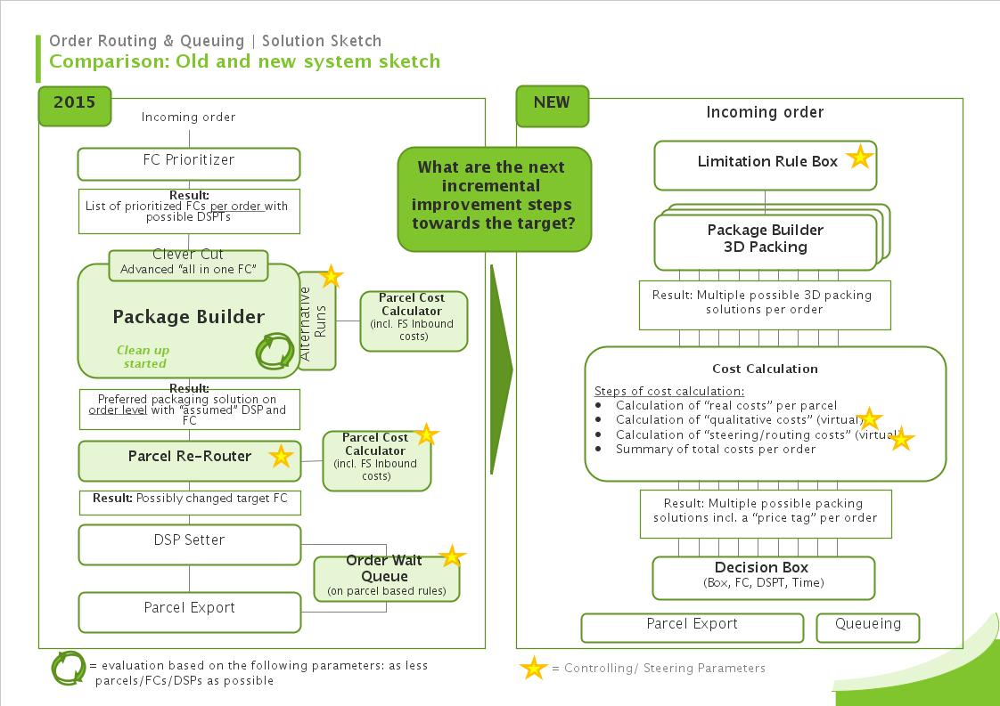
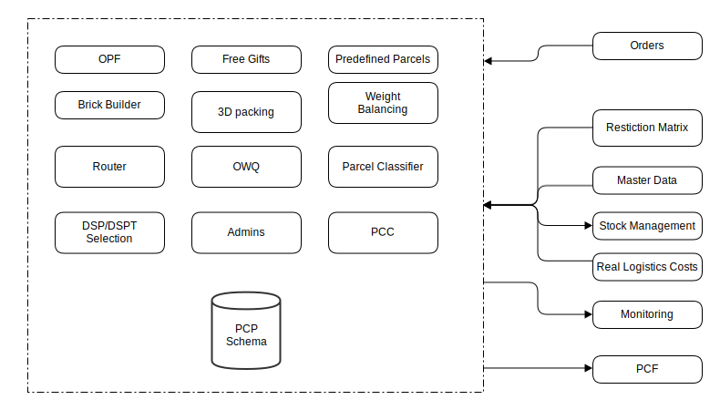
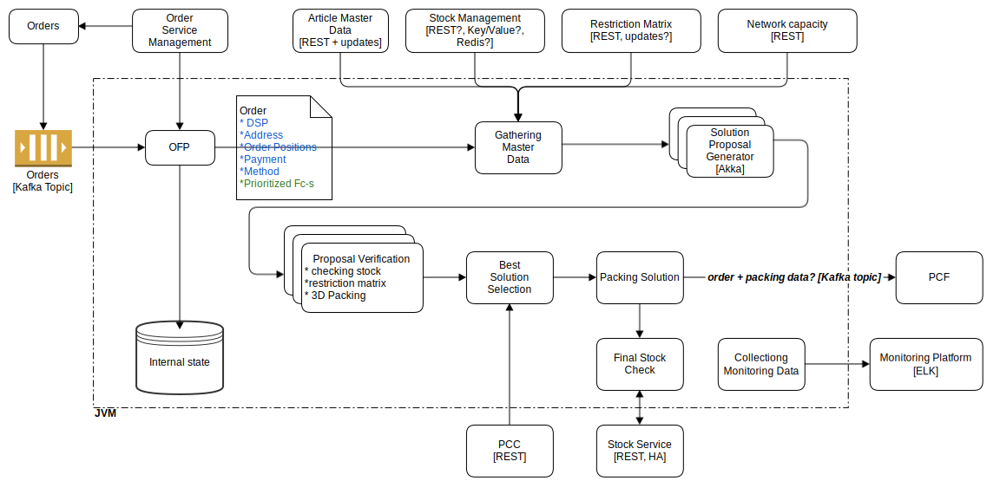

Current issues
feature transparency
- no tests for PB (in progress)
- lack of feature transparency
- features inside PB not visible or even known
code quality
- code quality & coverage
- PB extremely difficult to change
resilience
- single order blocking
- error handling
monitoring
- lack of business monitoring, it happened a few times, that Alex didn't know what was going on
- process transparency/availability
- cannot track single orders inside the chain
does not fully utilize network possibilities, see Clever Cut restrictions
latency (system performance)
- time to export
- not event based
- no easy orchestration of the chain
performance (application)
missing products?
- DSP delivery process
- DSP monitoring (PCF?)
- expected delivery date (PCF?)
- restriction matrix
- logic related to DSP/FC restrictions spread around different applications
new functions support
- time slot deliveries support
- next day delivery support
- shop customer information (time to deliver, parcels)
technical debt/legcay
- tight DB integration
- outdated libraries
- shared code base
- dependency to thezoo/zooman
data ownership
- costs - PCC and CMC
- missing central cost application for logistics related (maybe with overriding possibilities)
- multiple variants of the same costs (capacity costs model)
- costs overriding in end applications
- owner of shipping costs admin
logic fragmentation (tech/biz)
- free gifts/promotions/supplemental articles
- process ordering
- purely technical applications (orderChainProcessorInit)
- Some features that belong to PB implemented outside, mainly SQL scripts, but also OFP and all the others
- business logic in SQL and shell scripts
Business process view

Ideas how to improve the situation
transparency
- have a complete feature test coverage for PB/PCP
- make all features visible, as a living documentation
- full requirements of PB
business monitoring
- have a business transparent PCP: biz being aware why routing decisions are taken, i.e. via monitoring,
logging
- build a complete monitoring solution, that would enable Supply Chain and Transportation teams to see and
analyse data and take better decisions
- implement a feature benchmark for PCP
- transaction drill down
- monitor my applications
- have a proper business error (incidents) handling with clear responsibilities
make new FC setup just a matter of configuration
scalability
- go functional: pure methods, easy parallelism, immutable data
- go parallel PB: in and out
- elasticity of PCP
- implement a performance benchmarking for PB/PCP
- make PB parallelizable
- go parallel!
- stabilization of PB (performance)
deployment
- deploy my applications
- deliver PCP in CD mode
visualize dependencies - have a way to do a global usage search for shared stuff (zooman, thezoo)
product management
- central stock management application
- integrate DSP delivery process into PCF
- new PDC Operations product: Restriction Matrix
- have a centralized logistics costs product/app which also allows for overriding
- clear app/product and scope: functionality, interface, data
modularization
- data ownership
- move our data into our DB, whatever it would be
- completely detach from ZOOMAN, if necessary (for stuff like FC or DSP data) use some REST gateway
- make PCC/OCC a microservice
- use microservices instead of shared code
- make PCP (with an exception for PCC) one big app
- Pull all PCP related logic into PCP and implement it in Java, with tests of course
- move all admins inside and reimplement them using ExtJS
code quality
- clearly separate features in the code
- make code S.O.L.I.D.
- cleanup dead code/jobs
thezoo
- Completely detach from thezoo, no exceptions
- get rid of thezoo code base
- use new libs for old jobs
- integrate marketing promotions (free gifts, supplements) properly into PCP/PB
event based
- even based, no start/stop apps
- make PCP talk internally with events
- event based orchestration
- get rid of spring batch (where it doesn't make sense)
Target integration view

Target internal system view

Technical development roadmap
Milestone 1
- Make features visible
- Test all features
Milestone 2
- Clean up the code and make it functional
- Cut the code into clearly separated modules
- Define resilience mechanism
- Monitoring, both business and technical
- Running inside container
- Continuous Delivery
Milestone 3
- Scala proof of concept
- PCC Microservice
Milestone 4
- Remodel the process (depends on business requirements)
- Bring all applications into one executable
- Move functions outside of JVM into main codebase
Milestone 5
- Input proxy service
- Stock service proxy
- Multiprocessing
Milestone 6
- Order Management Service
- Restriction Matrix Service
- Network Capacity Service
- Article Service
Milestone 7
- Multithreading (non-Akka)
- Multithreading (Akka)
TODOs
- Non-functional requirements
- performance
- monitoring
- logging
- security
- deployment and execution
- data transparency
- general transparency
- ...
- other ideas
- get buy-in from everybody...
- ...and get to work
Further information:
- https://wiki.web.zooplus.de/display/AM/Parcel+Processing+Target+Architecture
- jacek.bilski@zooplus.com
- tahi.walcher@zooplus.com
- florin.zalum@zooplus.com